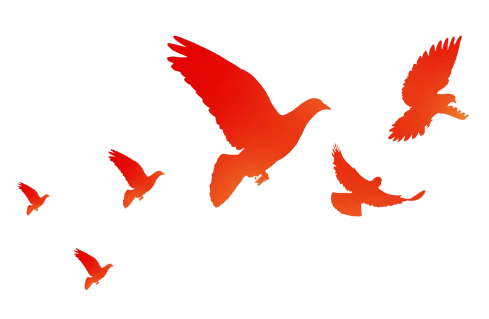
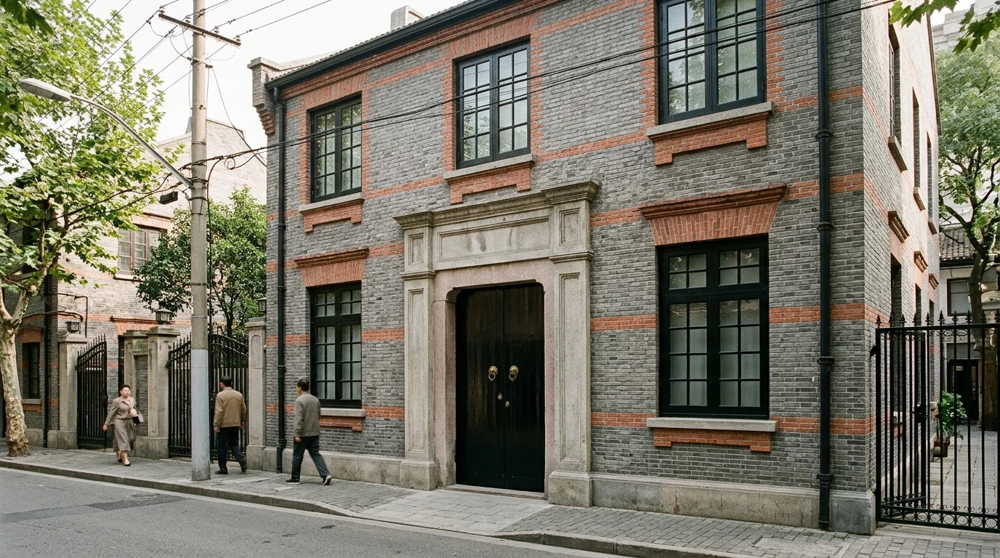
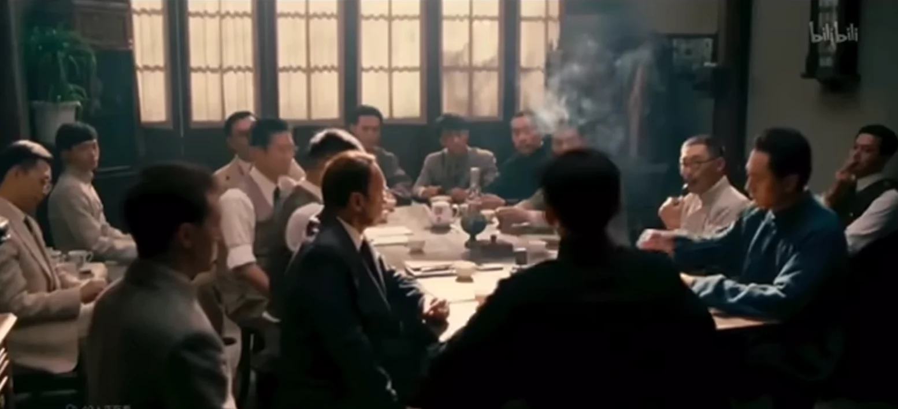
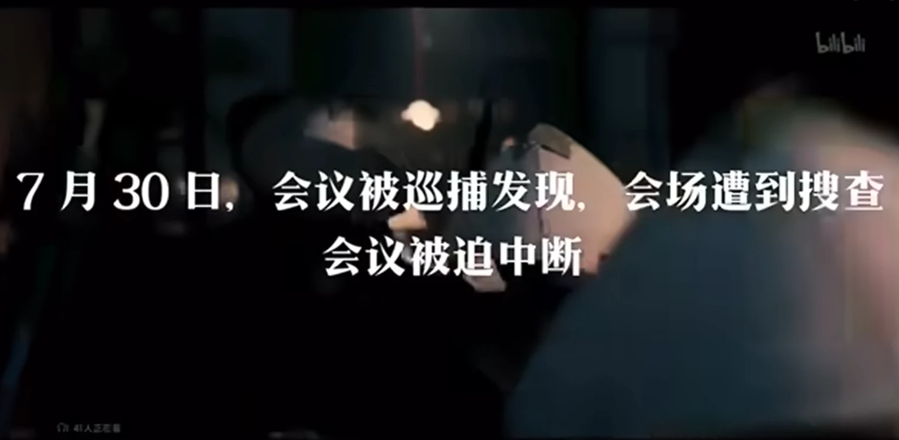
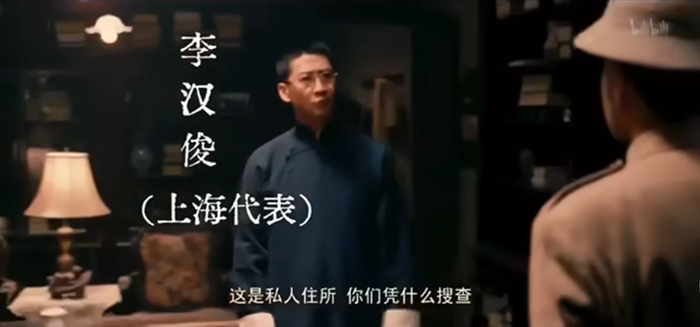
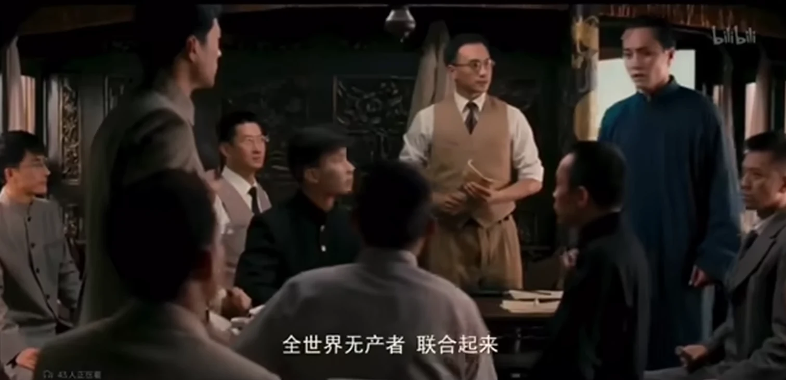
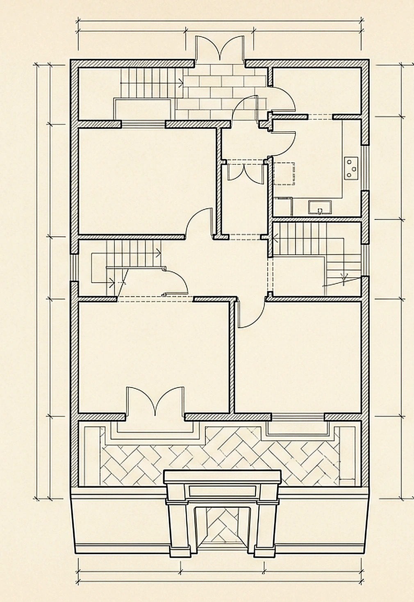
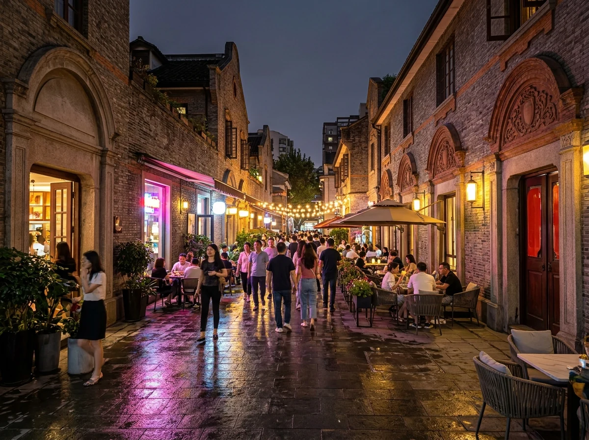
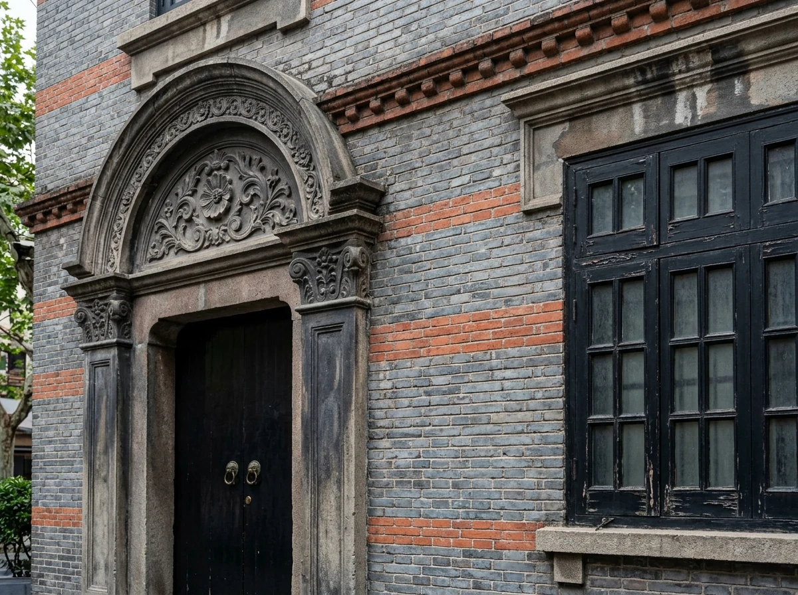

刘仁静
北京大学学生 · 来自北京


思政课主题演讲
青年 · 选择 · 接续
一九二一年 · 七月三十日 · 上海
树德里的 那个夏夜
一场平均年龄 28 岁的突围
28
平均年龄
13 位代表
13 位代表
十三位代表 · 七个地区
他们来时， 正年轻。
那不是一个遥远的群像，而是一张张与台下同学相仿的面孔。
20岁
邓恩铭
从山东赶来 · 来自济南
28岁
毛泽东
青年代表 · 来自长沙
上海北京武汉
长沙广州济南旅日
查看 13 位代表
上海：李达、李汉俊 北京：张国焘、刘仁静 武汉：董必武、陈潭秋 长沙：毛泽东、何叔衡 广州：陈公博 济南：王尽美、邓恩铭 旅日：周佛海 陈独秀指派代表：包惠僧
01
第一部分
惊魂 一夜
一个普通的夏夜，一次不普通的闯入。
01灯下议事
02门被推开
03即刻撤离
“故事，从 1921 年 7 月 30 日的晚上说起。”
法租界 · 望志路 106 号
闷热无风， 一场会议正开到第六次。
1921.07.30
晚上八点多
楼下客厅里，大家围着党的纲领反复讨论。历史的指针，在这间再普通不过的房子里缓慢转动。
就在这时， 前门被推开了……

1921 / 07 / 30

门关上之后
片刻之间， 一个决定。
没有请示，没有表决。一次果断判断，守住了一个政党的诞生。
灰衫人闯入
陌生男子未敲门径直闯入，借口寻人窥探会场文件与人员。
马林识破
共产国际代表经验丰富，一眼识破该男子实为租界密探。
当机立断
立刻休会撤离，一分钟都不耽误，展现非凡魄力。
后门撤离
迅速收起文件、熄灯闭门，代表沉着从后门隐入弄堂。
门外，脚步声越来越近。
从石库门，到南湖红船
火种， 没有熄灭。

01巡捕包围
十几分钟后，一队法租界巡捕荷枪实弹冲入，整栋石库门被严密封锁搜查。

02李汉俊周旋
他神色平静，沉着应对盘问，严密掩护参会代表，巧妙化解危机。

03南湖红船
代表们转移嘉兴南湖，租下画舫，在游船上完成最后议程。
起点 · 险中撤离
上海 · 石库门
秘密转移
续章 · 完成议程
嘉兴 · 南湖
诞生在石库门
完成在红船上
中国共产党，正式宣告诞生。
影像资料
回到那个夜晚
让我们穿过时间，感受这场惊心动魄的中共一大会议。
点击播放 · 观看结束后按 → 继续
02
第二部分
历史必然
为什么是上海？
01阶级基础
02思想阵地
03空间政治
“偶然的夏夜背后，是历史积蓄已久的力量。”
三个维度 · 一个建筑细节
为什么， 偏偏是上海？
这座城市的阶级、思想、空间与建筑，共同完成了一次历史的托举。
01
阶级基础
近代中国工业最发达的城市，数十万产业工人集聚，为马克思主义提供了最坚实的阶级力量。
产业与人02
思想阵地
《新青年》在沪出版，《共产党宣言》首个中文全译本在沪出版，建党早期联络中心也在这里。
书刊与传播03
空间政治
公共租界、法租界与华界三方管辖交错，留下了统治力量相对薄弱的缝隙。
管辖与缝隙04
石库门结构
里弄住宅如迷宫，前门通街、后门连弄，遇有险情便于人员迅速分散。
进退与疏散
不是偶然
而是条件汇聚成必然。
不是一座孤立的房子，
而是一整套历史条件。
从条件，到行动
历史选择了 上海。
- 01有工人阶级的基础
- 02有先进思想的阵地
- 03有可以周旋的缝隙
- 04还有一座撤得出去的房子
让条件变成现实的，
是一群敢于行动的年轻人。
“空间不是背景，
而是行动的一部分。”
石库门空间示意
EVACUATION ROUTE

03
第三部分
时代 回响
一百多年后的今天，这簇火仍在回答。
01旧街新声
02青年选择
03火种接续
“他们不是来打卡历史的，他们是来创造历史的。”
今天的兴业路 76 号
一条街， 两种时间。

一街之隔

105
年，只隔一条街
他们把青春留在夏夜
我们把答案写在今天
时代回响
“历史不是用来瞻仰的， 是用来接续的。”
一百零五年前，青年在树德里的夏夜点亮火种；
今天，轮到我们，让它继续燃烧。
1921
今天
01青年
02选择
03接续
愿这簇火，由我们接续
演讲结束 感谢聆听
树德里的那个夏夜 · 1921—2026
谢谢大家